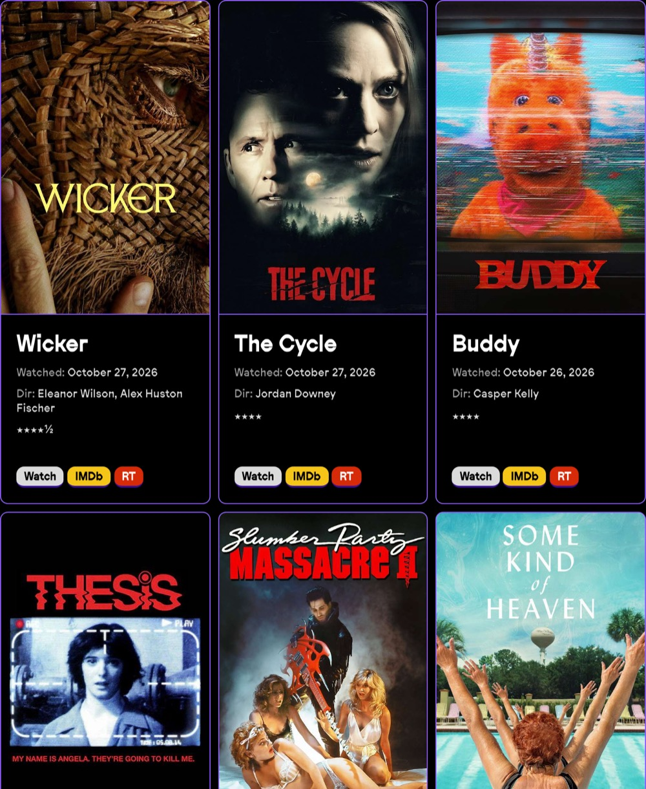
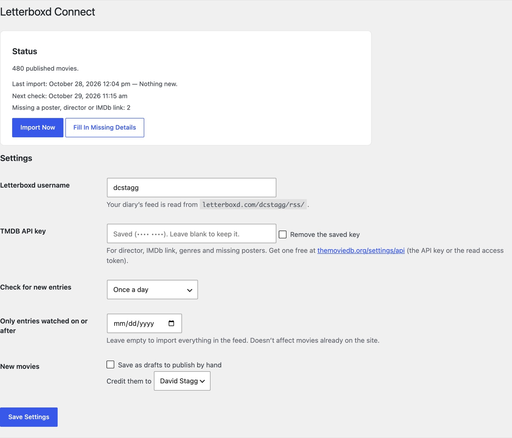

From your Letterboxd diary
The Cycle 2026
- Director
- Jordan Downey
- Watched
- October 27, 2026
- Rating
- ★★★★
Letterboxd Connect is a free WordPress plugin. Every film you log on Letterboxd becomes a post on your site, with your rating, your review, the day you watched it and the poster.
For WordPress 6.6 and newer on PHP 8.4. Free and open source under the GPL.
From your Letterboxd diary
The Cycle 2026
Logged on Letterboxd, posted on your site at the next check.


About five minutes, most of it waiting for posters.
No. It reads your public diary feed at letterboxd.com/username/rss/, the same one any feed reader can.
No. It fills in what's missing and follows changes you make on Letterboxd, field by field, but only where the post still says what Letterboxd said before. Your own edits always stay.
It stays deleted; the next import doesn't bring it back. If you change your mind, Forget Them on the settings page lets deleted movies be imported again.
Install version 2 over it the same way. The upgrade runs by itself: your settings carry over, your movies and their addresses stay, star ratings 1.x lost come back from the feed, and its off-by-one watch dates are corrected as entries reappear.
New versions show up on your Plugins screen with an update now link, like any other plugin, and you can turn on automatic updates there. Your movies and settings stay. The changelog says what changed. (Versions before 2.0.7 don't check for updates: install the latest by hand once.)
WordPress runs scheduled tasks when someone visits a page that isn't cached, so a quiet, cached site can go a long time without one. The plugin warns you on the dashboard when that happens. A cron job on your server that requests wp-cron.php every 15 minutes fixes it for good; most hosts can set one up in their control panel.
No. Letterboxd Connect is an independent plugin by David Stagg and isn't affiliated with or endorsed by Letterboxd.
The changelog is in CHANGELOG.md on GitHub.